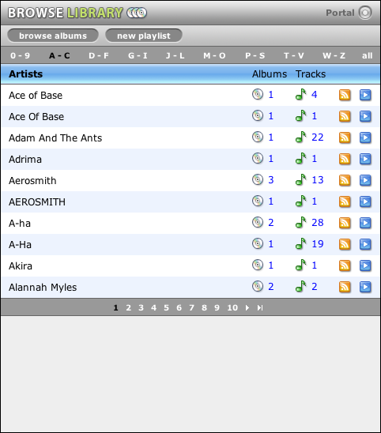
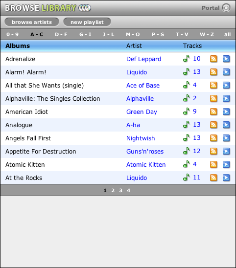
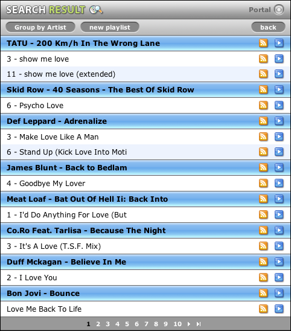

Browse library
The most powerful feature of MyTunesRSS is browsing the library. Starting on the portal page you can reach the page for browsing by artist. These are listed in alphabetic order and depending on the set number of items per page there are multiple pages. Above the list is a page with groups of letters. The group "A - C" for example contains all artists beginning with the letters A, B and C.
To the right of each artist the number of albums this artist has tracks on and the number of tracks of this artist is displayed. You can click the number of albums to show them. Clicking the number of tracks displays a list of those tracks.
At the end of each line are icons for creating M3U playlists or RSS feeds from all tracks of an artist.
Above the list are links for switching to browse albums and for creating ne playlists. This function will be described in a later chapter.
The list of albums looks similar. It shows all albums sorted alphabetically. Next to each album is the artist or "various" if there are multiple artists on the album, the track count for the album and the icons for creating M3U playlists or RSS feeds. With a click on the track count you get to the track list display. A click on the artist (not supported for "various") takes you to all albums of this artist. In case you have a filtered list, i.e. all albums of a single artist, you also get a special item at the bottom which is called "All tracks of the above albums". This is displayed only if there are multiple albums for an artist.
The track list is displayed when searching on the portal page or with a click on the track count in any other list. The titles are sorted and grouped either by album or by artist. You can switch from one view to the other. You can also create RSS feeds or M3U playlists from each track or a group of tracks. In the group headers as well as in each title, the artist name is clickable and leads to all albums of that artist.
